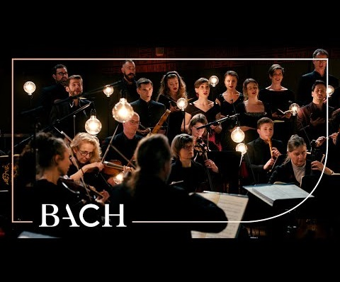
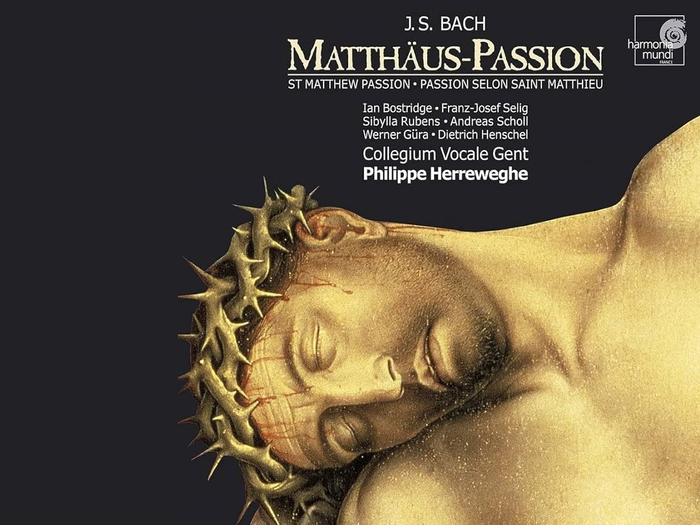

Netherlands Bach Society
Netherlands Bach Society

Netherlands Bach Society(NBS)는 1921년 네덜란드 나아르던에서 설립된 단체로, 세계에서 가장 오래된 바로크 음악 단체 중 하나이다. 2021년 창립 100주년을 맞아 바흐 전곡을 연주하고 유튜브에서 무료로 공개하는 "All of Bach" 프로젝트를 통해 바흐 음악을 전 세계에 알리고 있다.
Latest Performance
2025-04-10 위긴겐 성당 — BWV 244 St Matthew Passion 전곡.
